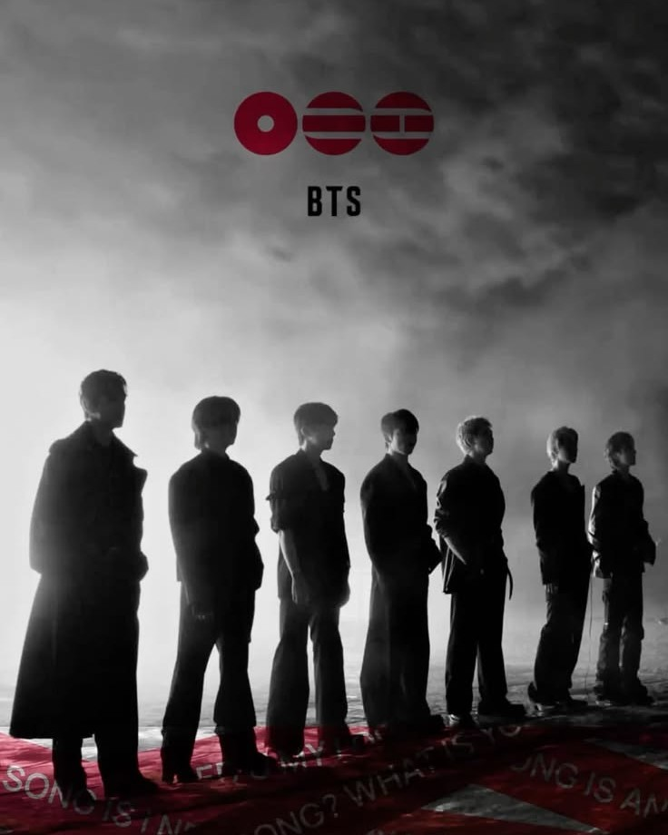
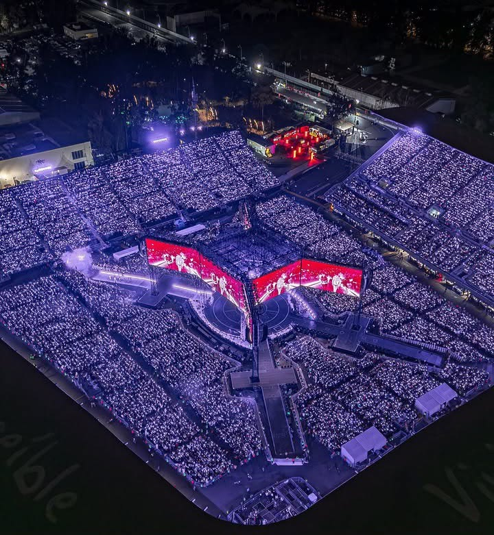
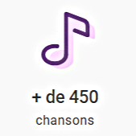
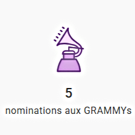

BTS en quelques mots...
Années : Depuis 2013 jusqu'à aujourd'hui, sachant que le groupe a été mis en pause pour cause de service militaire entre 2023 et 2026.
Membres : Jin, SUGA*, J-Hope, Rap Moster, Jimin, V, Jungkook.
Style musical : K-pop
BTS est considéré comme l'un des groupes masculins les plus connus et les plus influents à l'échelle mondiale de notre époque. Le groupe fait à présent partie intégrante de la scène musicale internationale et se hisse en haut des classements.
* SUGA étant son nom de scène au sein du groupe BTS, et Agust D son nom de scène en tant qu'artiste solo.
En un peu plus détaillé
BTS est un groupe sud-coréen de sept membres nommé aux Grammy Awards à plusieurs reprises. Reconnus pour leur musique authentique et autoproduite, leurs performances de haut niveau et la manière dont ils interagissent avec leurs fans, nommés les ARMYs, BTS s’est imposé comme des « icônes de la pop du 21e siècle », battant d’innombrables records mondiaux. À chaque concerts, BTS performe à guichets fermés, et ce quelque soit le pays. Le groupe transmet également une influence positive à travers des initiatives telles que la campagne LOVE MYSELF en partenariat avec l’UNICEF ou encore le discours réalisé par le groupe devant l’assemblée de l’ONU.



L’acronyme BTS signifie Bangtan Sonyeondan (방탄소년단) en coréen se traduisant littéralement par Bulletproof Boy Scouts en anglais. Les membres de BTS l’expliquent de cette façon : “Bulletproof veut dire blindé/pare-balles. Cela signifie que nous essayons d’être un bouclier contre l’oppression et la discrimination qui s’abattent en rafale sur les adolescents d’aujourd’hui. Nous souhaitons protéger leurs idéaux et leurs valeurs.” En 2017, dans le cadre de leur expansion internationale et avec l’évolution naturelle des membres du groupe, qui ont grandi et gagné en maturité, une nouvelle signification a été ajoutée à BTS : Beyond The Scene. Big Hit Music et BTS expliquent que cette nouvelle signification s’ajoute et s’inscrit dans la continuité de la première. “Elle symbolise la jeunesse qui ne se contente pas de la réalité actuelle et qui ouvre la porte qui lui permettra d’avancer et de continuer à grandir.”